Schmuck
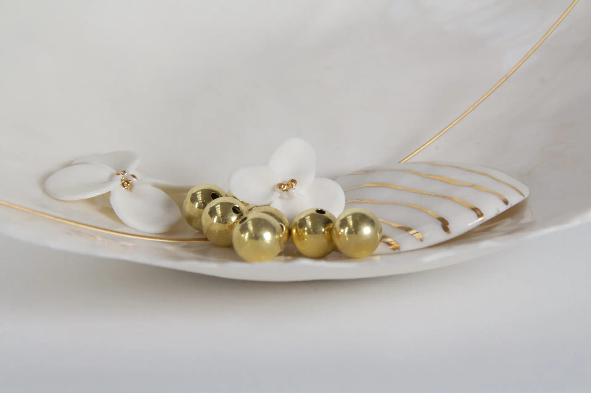
Gold
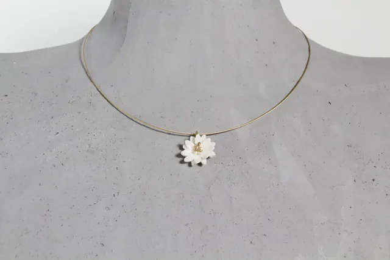
blumiger SchneeSilber vergoldet 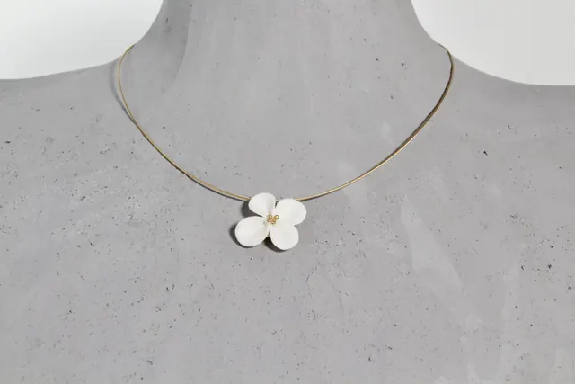
HortensienblüteSilber vergoldet 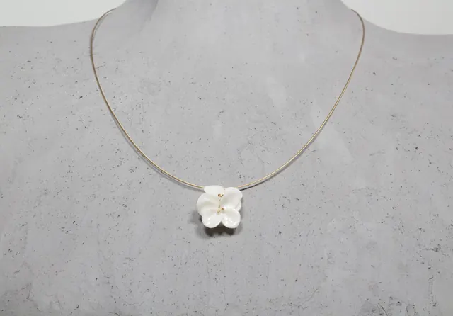
HortensienblütenpaarSilber vergoldet 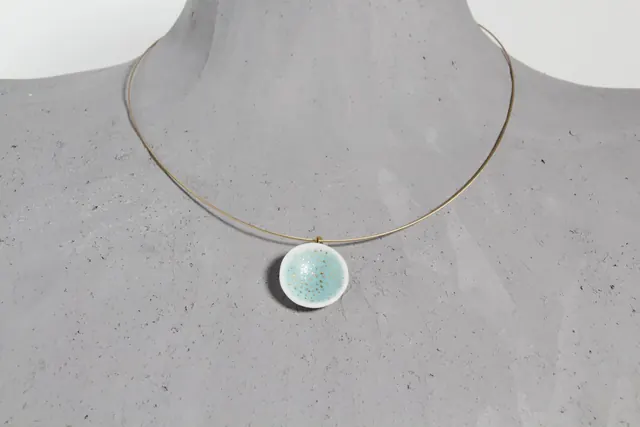
ReflexionSilber vergoldet 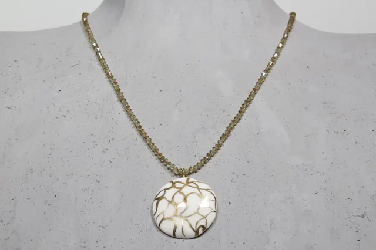
schwirrendSilber vergoldet 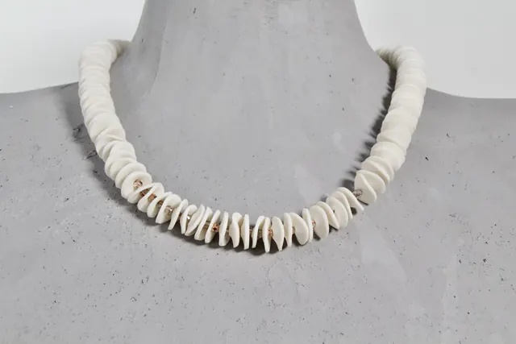
StrandSilber vergoldet 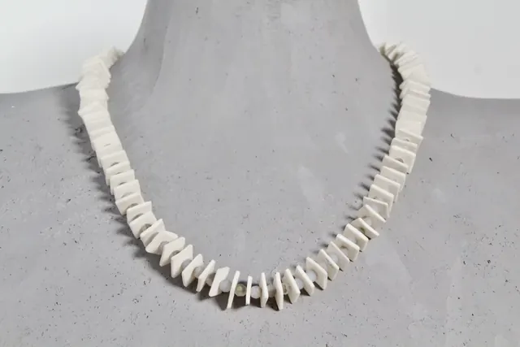
weiße KantenSilber vergoldet 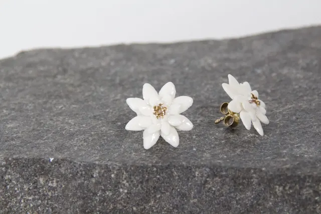
blumiger SchneeSilber vergoldet 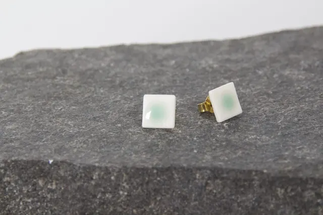
ein Hauch TürkisSilber vergoldet 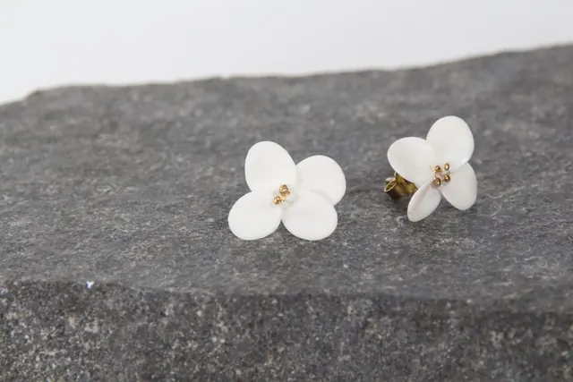
HortensienblüteSilber vergoldet 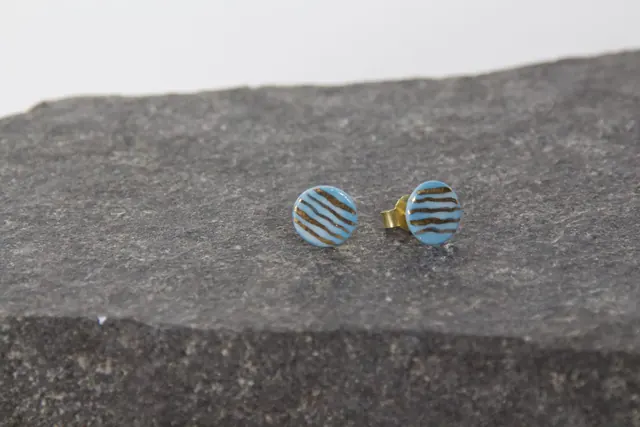
Linien rund blauSilber vergoldet 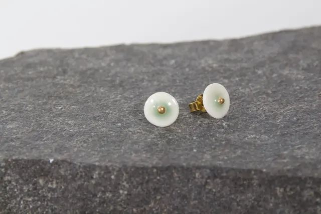
Umkreisend türkisSilber vergoldet 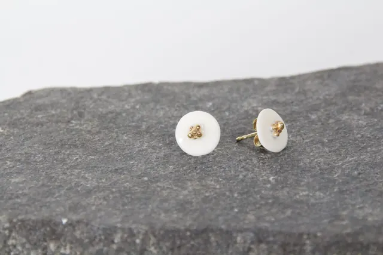
Umkreisend weißSilber vergoldet


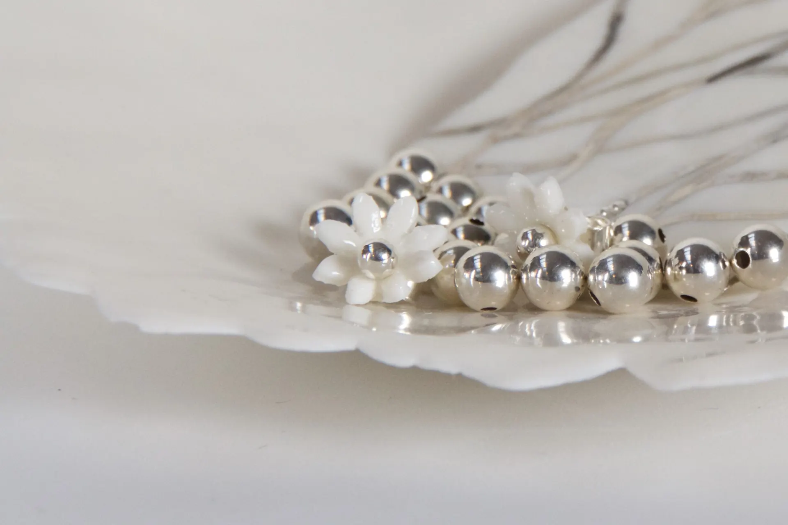
Silber
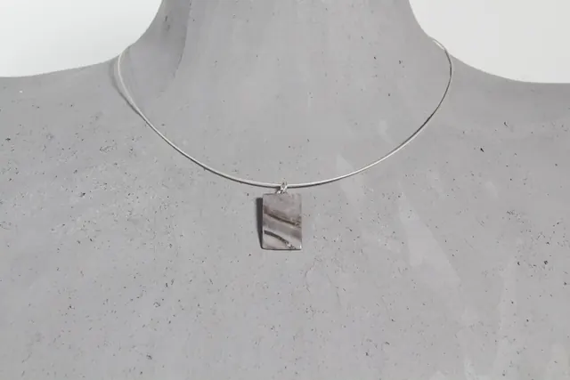
feine ErdeSilber 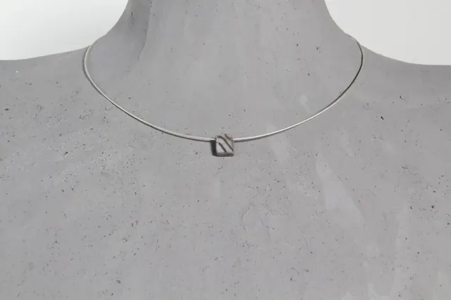
fließende LinienSilber 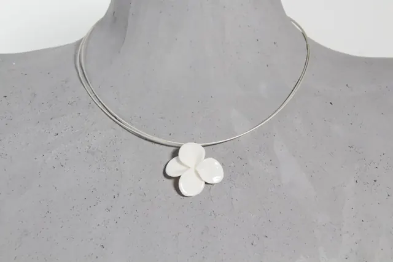
in voller BlüteSilber 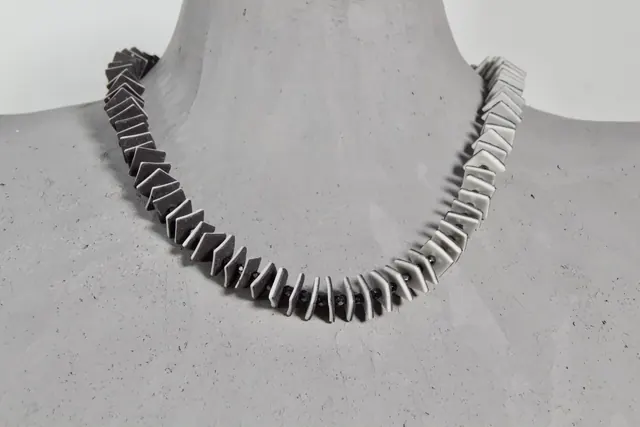
Kontraste & KantenSilber 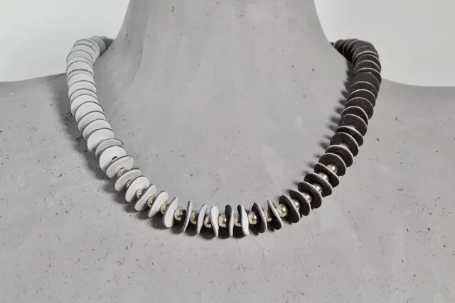
Kontraste 02Silber 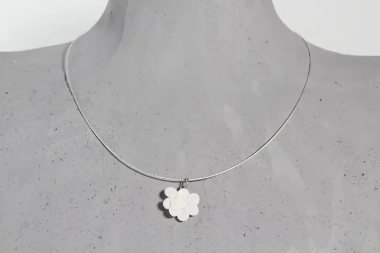
weißes Blumenpaar 01Silber 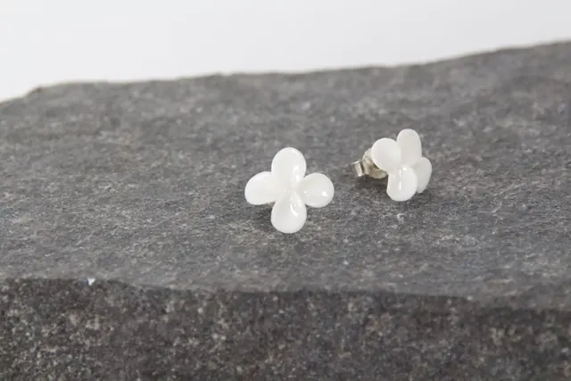
BlütenSilber 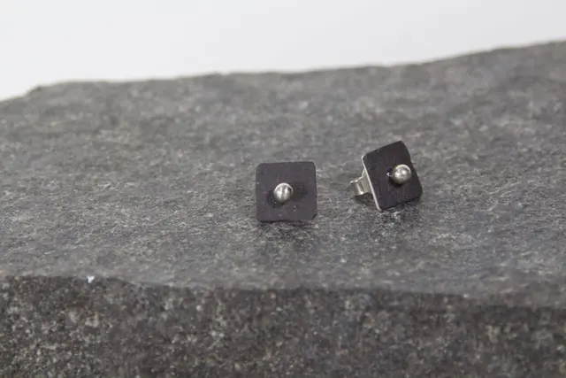
im ZentrumSilber 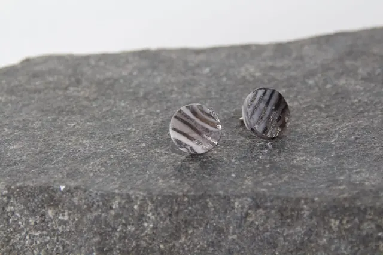
Linien rundSilber 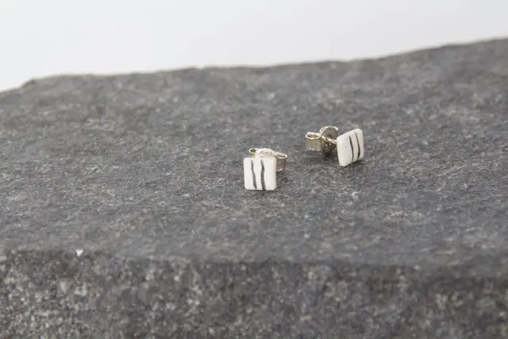
LinienSilber 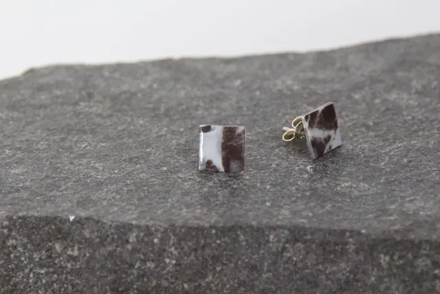
mamoriertSilber